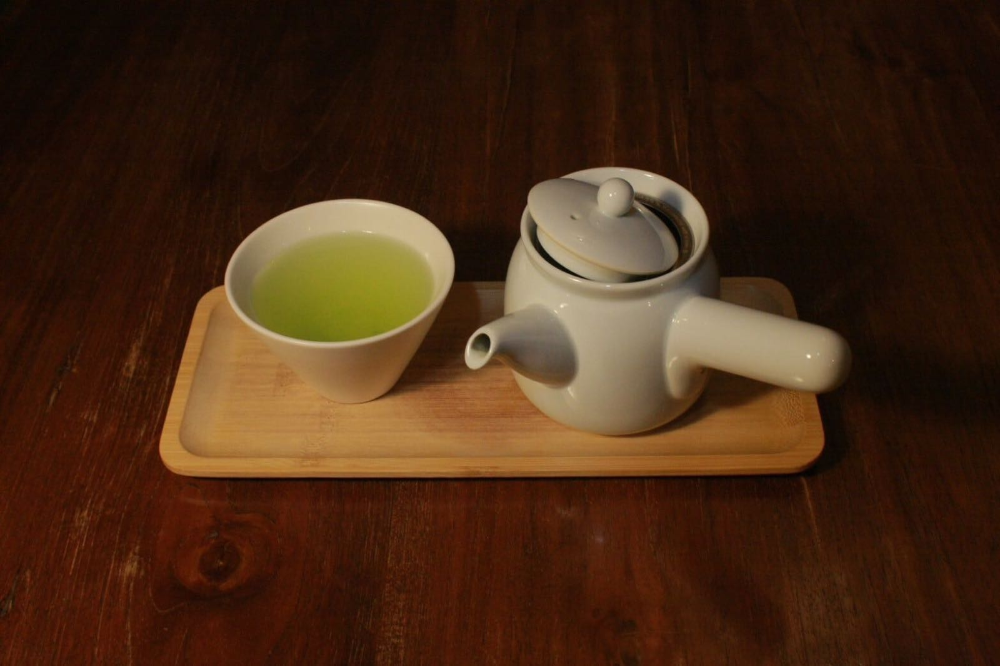
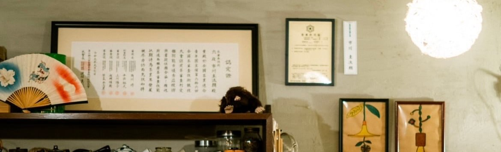
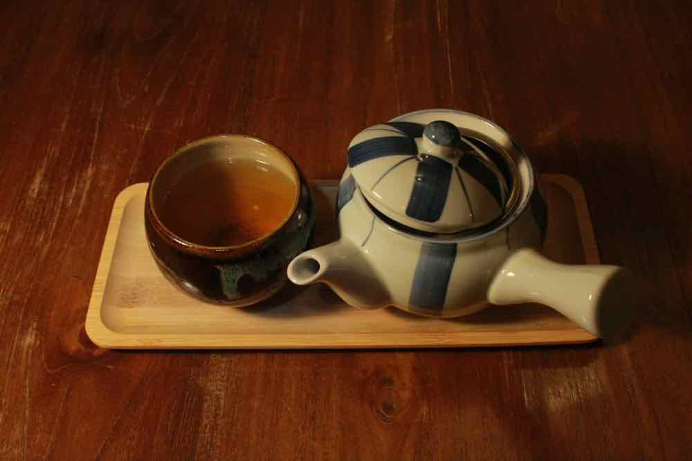
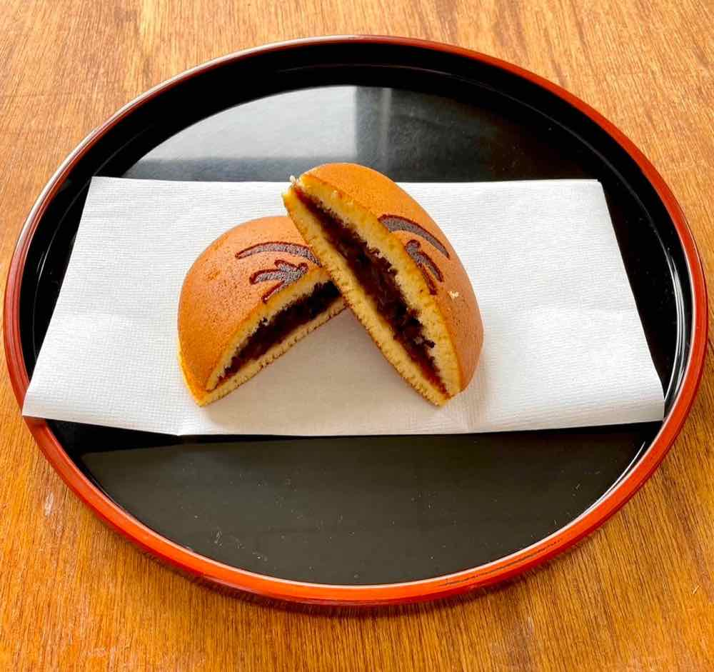
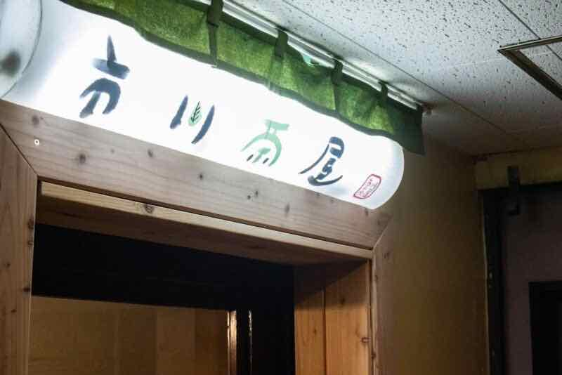

札幌の日本茶専門店
いつもの日々に、お茶で、ひといき。
九州の茶産地で学んだ店主の、オリジナル煎茶と自家焙煎のほうじ茶。
南4条西6丁目、レトロなビルの地下にあるお店です。
市川茶屋のこと
About us
最初に飲んだお茶の味が忘れられず、
その美味しさを、地元・北海道の人にも。
学生時代にお茶の魅力に惹かれた店主は、卒業後、福岡県八女市や鹿児島県知覧町で、お茶の栽培・製造・販売に携わりました。約4年間九州で学んだのち、地元の北海道に戻り、札幌で市川茶屋を開きました。
めざしているのは、手軽に美味しいお茶を飲める、居心地のいい場所。オリジナル煎茶や自家焙煎のほうじ茶、季節のお茶を扱っています。
店主の歩み
- 2019–2022九州の八女・知覧で、お茶の栽培・製造・販売を経験
- 2019全国茶審査技術競技大会で六段位を取得
- 2023北海道に戻り、市川茶屋を開店
お店のメニュー
In the shop産地の違う煎茶を飲み比べたり、玉露や抹茶、自家焙煎のほうじ茶をゆっくり味わったり。お茶にはちょっとしたお菓子が付きます。

お茶
お酒
甘味・お茶漬け
セット
お店での楽しみ方
お持ち帰り・通販
Take-home & online
「ひといき」の茶葉
朝、昼、夜、そしていつもの時間に。お店で飲んだお茶を、ご自宅でも。店頭のほか、オンラインショップでも購入できます。
価格の見かた
店頭価格はお店で茶葉を買うときの価格（店頭メニュー表の表記）、通販価格はオンラインショップの税込価格（確認）です。どちらも茶葉の価格で、店内で飲む一杯の価格ではありません。
ティーバッグや八女抹茶、ギフト用の「ひといきの贈り箱」なども、オンラインショップで取り扱っています。
店舗情報
Access- 店名
- 市川茶屋
- 住所
- 営業時間
- 定休日
臨時休業や最新のお知らせは、Instagramでご確認ください。
